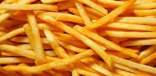

Patatas fritas
Receta de papitas fritas caseras.

Ingredientes
3 o 4 patatas
4 dientes de ajo
Aceite de oliva
Sal
Elaboración (Pasos)
Calentar aceite en una sartén.
Añadir las patatas cortas, la sal y los ajos
Freir al gusto.
Servir en plato.